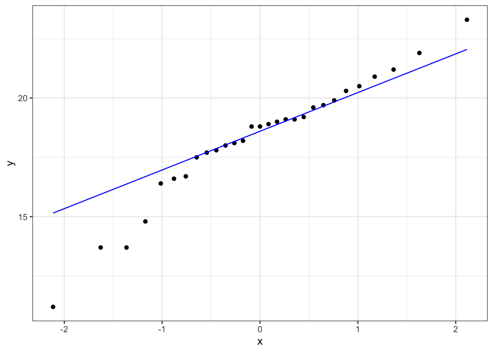
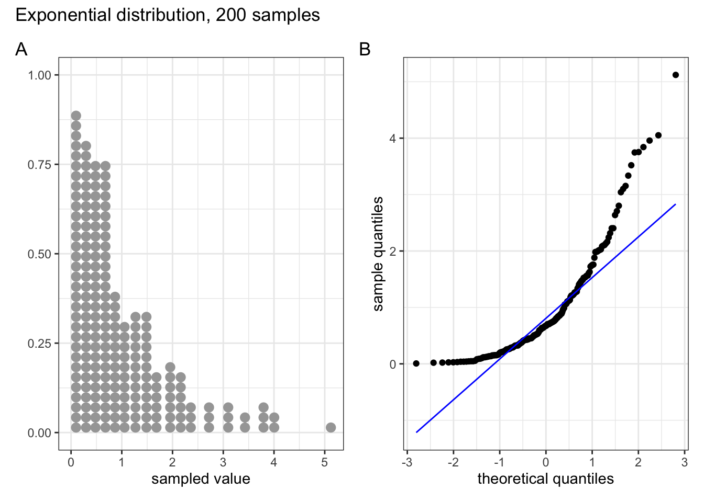
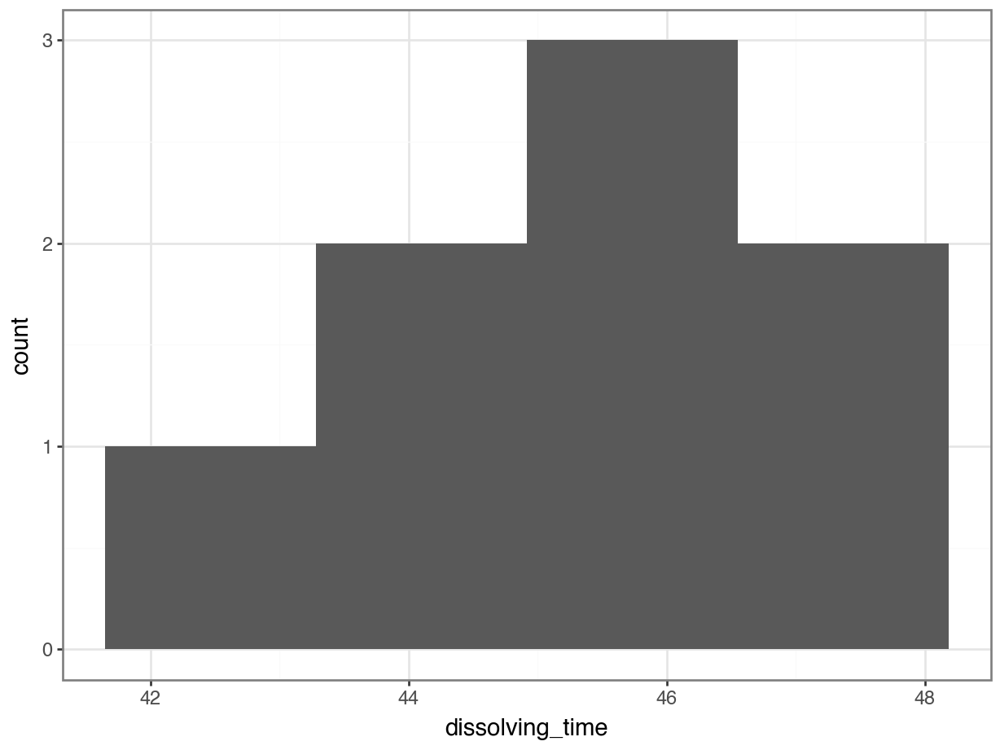
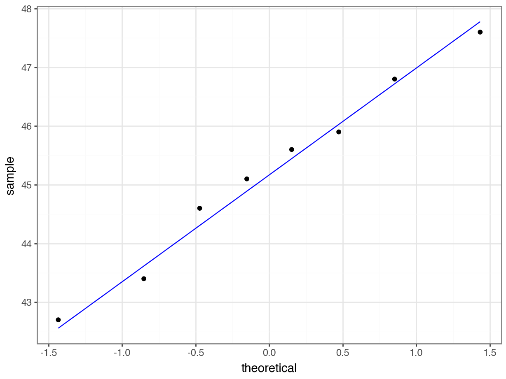

# A collection of R packages designed for data science
library(tidyverse)
# Converts stats functions to a tidyverse-friendly format
library(rstatix)4 One-sample data
TipLearning outcomes
Questions
- When do I perform a one-sample test?
- What are the assumptions?
- How do I interpret and present the results of the test?
- How do I deal with non-normal data?
Objectives
- Set out your hypothesis for single sample continuous data
- Be able to summarise and visualise the data
- Understand and assess the underlying assumptions of the test
- Perform a one-sample t-test
- Be able to interpret and report the results
- Be able to do these steps on non-normal data
4.1 Libraries and functions
NoteClick to expand
4.1.1 Libraries
4.1.2 Functions
# Performs a one-sample t-test, Student's t-test and Welch's t-test in later sections
rstatix::t_test()
# Performs a Shapiro-Wilk test for normality
stats::shapiro.test()
# Performs one and two sample Wilcoxon tests
rstatix::wilcox_test()
# Plots a Q-Q plot for comparison with a normal distribution
ggplot2::stat_qq()
# Adds a comparison line to the Q-Q plot
ggplot2::stat_qq_line()4.1.3 Libraries
# A Python data analysis and manipulation tool
import pandas as pd
# Simple yet exhaustive stats functions.
import pingouin as pg
# Python equivalent of `ggplot2`
from plotnine import *4.1.4 Functions
# Reads in a .csv file
pandas.DataFrame.read_csv()
# Performs the Shapiro-Wilk test for normality
pingouin.normality()
# Performs a t-test
pingouin.ttest()
# Performs Wilcoxon signed rank test
pingouin.wilcoxon()
# Plots a Q-Q plot for comparison with a normal distribution
plotnine.stats.stat_qq()
# Adds a comparison line to the Q-Q plot
plotnine.stats.stat_qq_line()4.2 Purpose and aim
One sample tests are used when we have a single sample of continuous data. It is used to find out if the sample came from a parent distribution with a given mean (or median). This essentially boils down to finding out if the sample mean (or median) is “close enough” to our hypothesised parent population mean (or median). So, in the figure below, we could use these tests to see what the probability is that the sample of ten points comes from the distribution plotted above it i.e. a population with a mean of 20 mm.

4.3 Choosing a test
There are two tests that we are going to look at in this situation; the one-sample t-test, and the one-sample Wilcoxon signed rank-sum test. Both tests work on the sort of data that we’re considering here, but they both have different assumptions.
If your data is normally distributed, then a one-sample t-test is appropriate. If your data aren’t normally distributed, but their distribution is symmetric, and the sample size is small then a one-sample Wilcoxon signed rank-sum test is more appropriate.
For each statistical test we consider there will be five tasks. These will come back again and again, so pay extra close attention.
Important
- Setting out of the hypothesis
- Summarise and visualisation of the data
- Assessment of assumptions
- Implementation of the statistical test
- Interpreting the output and presentation of results
We won’t always carry these out in exactly the same order, but we will always consider each of the five tasks for every test.
4.4 Data and hypotheses
For example, suppose we measure the body lengths of male guppies (in mm) collected from the Guanapo River in Trinidad. We want to test whether the data support the hypothesis that the mean body is actually 20 mm. We form the following null and alternative hypotheses:
- \(H_0\): The mean body length is equal to 20mm (\(\mu =\) 20).
- \(H_1\): The mean body length is not equal to 20mm (\(\mu \neq\) 20).
We will use a one-sample, two-tailed t-test to see if we should reject the null hypothesis or not.
- We use a one-sample test because we only have one sample.
- We use a two-tailed t-test because we want to know if our data suggest that the true (population) mean is different from 20 mm in either direction rather than just to see if it is greater than or less than 20 mm (in which case we would use a one-tailed test).
- We’re using a t-test because we don’t know any better yet and because I’m telling you to. We’ll look at what the precise assumptions/requirements need to be in a moment.
Make sure you have downloaded the data (see: Data section) and placed it within your working directory.
First we load the relevant libraries:
# load tidyverse
library(tidyverse)We then read in the data and create a table containing the data.
# import the data
fishlengthDF <- read_csv("data/CS1-onesample.csv")
fishlengthDF# A tibble: 29 × 3
id river length
<dbl> <chr> <dbl>
1 1 Guanapo 19.1
2 2 Guanapo 23.3
3 3 Guanapo 18.2
4 4 Guanapo 16.4
5 5 Guanapo 19.7
6 6 Guanapo 16.6
7 7 Guanapo 17.5
8 8 Guanapo 19.9
9 9 Guanapo 19.1
10 10 Guanapo 18.8
# ℹ 19 more rowsThe first line reads the data into R and creates an object called a tibble, which is a type of data frame. This data frame contains 3 columns: a unique id, river encoding the river and length with the measured guppy length.
We then read the data in:
# load the data
fishlength_py = pd.read_csv('data/CS1-onesample.csv')
# inspect the data
fishlength_py.head() id river length
0 1 Guanapo 19.1
1 2 Guanapo 23.3
2 3 Guanapo 18.2
3 4 Guanapo 16.4
4 5 Guanapo 19.74.5 Summarise and visualise
Summarise the data and visualise it:
summary(fishlengthDF) id river length
Min. : 1 Length:29 Min. :11.2
1st Qu.: 8 Class :character 1st Qu.:17.5
Median :15 Mode :character Median :18.8
Mean :15 Mean :18.3
3rd Qu.:22 3rd Qu.:19.7
Max. :29 Max. :23.3 From the summary() output we can see that the mean and median of the length variable are quite close together. The id column also has minimum, maximum, mean etc. values - these are not useful! The numbers in the id column have no numerical value, but are just to ensure each observation can be traced back, if needed.
ggplot(fishlengthDF,
aes(x = river,
y = length)) +
geom_boxplot()First we have a look at a numerical summary of the data:
fishlength_py.describe() id length
count 29.000000 29.000000
mean 15.000000 18.296552
std 8.514693 2.584636
min 1.000000 11.200000
25% 8.000000 17.500000
50% 15.000000 18.800000
75% 22.000000 19.700000
max 29.000000 23.300000From the describe() output we can see that the mean and median of the length variable are quite close together. The id column also has minimum, maximum, mean etc. values - these are not useful! The numbers in the id column have no numerical value, but are just to ensure each observation can be traced back, if needed.
p = (ggplot(fishlength_py,
aes(x = "river",
y = "length")) +
geom_boxplot())
p.show()The data do not appear to contain any obvious errors, and whilst both the mean and median are less than 20 (18.3 and 18.8 respectively) it is not absolutely certain that the sample mean is sufficiently different from this value to be “statistically significant”, although we may anticipate such a result.
4.6 Assumptions
When it comes to one-sample tests, we have two options:
- t-test
- Wilcoxon signed-rank test
For us to use a t-test for this analysis (and for the results to be valid) we have to make two assumptions:
- The parent distribution from which the sample is taken is normally distributed (and as such the sample data are normally distributed themselves).
Note
It is worth noting though that the t-test is actually pretty robust in situations where the sample data are not normal. For sufficiently large sample sizes (your guess is as good as mine, but conventionally this means about 30 data points), you can use a t-test without worrying about whether the underlying population is normally distributed or not.
- Each data point in the sample is independent of the others. This is in general not something that can be tested for and instead has to be considered from the sampling procedure. For example, taking repeated measurements from the same individual would generate data that are not independent.
The second point we know nothing about and so we ignore it here (this is an issue that needs to be considered from the experimental design), whereas the first assumption can be checked. There are three ways of checking for normality:
In increasing order of rigour, we have
- Histogram
- Quantile-quantile plot
- Shapiro-Wilk test
4.6.1 Histogram of the data
Plot a histogram of the data, which gives:
ggplot(fishlengthDF,
aes(x = length)) +
geom_histogram(bins = 15)
p = (ggplot(fishlength_py,
aes(x = "length")) +
geom_histogram(bins = 15))
p.show()The distribution appears to be uni-modal and symmetric, and so it isn’t obviously non-normal. However, there are a lot of distributions that have these simple properties but which aren’t normal, so this isn’t exactly rigorous. Thankfully there are other, more rigorous tests.
NB. By even looking at this distribution to assess the assumption of normality we are already going far beyond what anyone else ever does. Nevertheless, we will continue.
4.6.2 Q-Q plot of the data
Q-Q plot is the short for quantile-quantile plot. This diagnostic plot (as it is sometimes called) is a way of comparing two distributions. How Q-Q plots work won’t be explained here but will be addressed in the next session.
Construct a Q-Q Plot of the quantiles of the data against the quantiles of a normal distribution:
ggplot(fishlengthDF,
aes(sample = length)) +
stat_qq() +
stat_qq_line(colour = "blue")
p = (ggplot(fishlength_py,
aes(sample = "length")) +
stat_qq() +
stat_qq_line(colour = "blue"))
p.show()What is important to know is that if the data were normally distributed then all of the points should lie on (or close to) the diagonal line in this graph.
In this case, the points lie quite close to the line for the most part but the sample quantiles (points) from either end of the sample distribution are either smaller (below the line on the left) or larger (above the line on the right) than expected if they were supposed to be normally distributed. This suggests that the sample distribution is a bit more spread out than would be expected if it came from a normal distribution.
It is important to recognise that there isn’t a simple unambiguous answer when interpreting these types of graph, in terms of whether the assumption of normality has been well met or not and instead it often boils down to a matter of experience.
It is a very rare situation indeed where the assumptions necessary for a test will be met unequivocally and a certain degree of personal interpretation is always needed. Here you have to ask yourself whether the data are normal “enough” for you to be confident in the validity of the test.
Below are four examples of QQ plots for different types of distributions:
These two graphs relate to 200 data points that have been drawn from a normal distribution. Even here you can see that the points do not all lie perfectly on the diagonal line in the QQ plot, and a certain amount of deviation at the top and bottom of the graph can happen just by chance (if I were to draw a different set of point then the graph would look slightly different).

These two graphs relate to 200 data points that have been drawn from a uniform distribution. Uniform distributions are more condensed than normal distributions, and this is reflected in the QQ plot having a very pronounced S-shaped pattern to it (this is colloquially known as snaking).

These two graphs relate to 200 data points that have been drawn from a t distribution. t distributions are more spread out than normal distributions, and this is reflected in the QQ plot again having a very pronounced S-shaped pattern to it, but this time the snaking is a reflection of that observed for the uniform distribution.

These two graphs relate to 200 data points that have been drawn from an exponential distribution. Exponential distributions are not symmetric and are very skewed compared with normal distributions. The significant right-skew in this distribution is reflected in the QQ plot again having points that curve away above the diagonal line at both ends (a left-skew would have the points being below the line at both ends).
In all four cases it is worth noting that the deviations are only at the ends of the plot.
4.6.3 Shapiro-Wilk test
This is one of a number of formal statistical test that assess whether a given sample of numbers come from a normal distribution. It calculates the probability of getting the sample data if the underlying distribution is in fact normal. It is very easy to carry out in R.
Perform a Shapiro-Wilk test on the data:
The shapiro.test() function needs a numerical vector as input. We get this by extracting the length column.
shapiro.test(fishlengthDF$length)
Shapiro-Wilk normality test
data: fishlengthDF$length
W = 0.94938, p-value = 0.1764- The 1st line gives the name of the test and the
data:tells you which data are used. - The 3rd line contains the two key outputs from the test:
- The calculated W-statistic is 0.9494 (we don’t need to know this)
- The p-value is 0.1764
We take the length values from the fishlength_py data frame and pass that to the normality() function in pingouin:
pg.normality(fishlength_py.length) W pval normal
length 0.949384 0.176423 True- the
Wcolumn gives us the W-statistic - the
pvalcolumn gives us the p-value - the
normalcolumn gives us the outcome of the test inTrue/False
As the p-value is bigger than 0.05 (say) then we can say that there is insufficient evidence to reject the null hypothesis that the sample came from a normal distribution.
It is important to recognise that the Shapiro-Wilk test is not without limitations. It is rather sensitive to the sample size being considered. In general, for small sample sizes, the test is very relaxed about normality (and nearly all data sets are considered normal), whereas for large sample sizes the test can be overly strict, and it can fail to recognise data sets that are very nearly normal indeed.
4.6.4 Assumptions overview
Important
In terms of assessing the assumptions of a test it is always worth considering several methods, both graphical and analytic, and not just relying on a single method.
In the fishlength example, the graphical Q-Q plot analysis was not especially conclusive as there was some suggestion of snaking in the plots, but the Shapiro-Wilk test gave a non-significant p-value (0.1764). Putting these two together, along with the original histogram and the recognition that there were only 30 data points in the data set I personally would be happy that the assumptions of the t-test were met well enough to trust the result of the t-test, but you may not be…
In which case we would consider an alternative test that has less stringent assumptions (but is less powerful): the one-sample Wilcoxon signed-rank test.
4.7 Implement and interpret the test
Perform a one-sample, two-tailed t-test:
t_test(length ~ 1,
mu = 20, alternative = "two.sided",
data = fishlengthDF)# A tibble: 1 × 7
.y. group1 group2 n statistic df p
* <chr> <chr> <chr> <int> <dbl> <dbl> <dbl>
1 length 1 null model 29 -3.55 28 0.00139- The first argument must be a numerical column of data values. In our case it’s the
lengthvalues. We add~ 1to indicate that we’re going to compare these to a “null model”. More on this later, but for now it’s just a quirky syntax thing in R. - The
muargument must be a number and is the mean to be tested under the null hypothesis. - The
alternativeargument gives the type of alternative hypothesis and must be one oftwo.sided,greaterorless. We have no prior assumptions on whether the alternative fish length would be greater or less than 20, so we choosetwo.sided.
In the output:
.y.is the variable of interestnis the number of observations- ignore the
groupcolumns for now statisticis the calculated t-value (-3.549184)dfgives us the number of degrees of freedom (28). Again, more on this later.pgives us the p-value of 0.00139
pg.ttest(x = fishlength_py.length,
y = 20,
alternative = "two-sided").round(3) T dof alternative p-val CI95% cohen-d BF10 power
T-test -3.549 28 two-sided 0.001 [17.31, 19.28] 0.659 25.071 0.929- the
xargument must be a numerical series of data values - the
yargument must be a number and is the mean to be tested under the null hypothesis - the
alternativeargument defines the alternative hypothesis (we have no expectation that the fish length is smaller or larger than 20, if the null hypothesis does not hold up) - with
.round(3)we’re rounding the outcome to 3 digits
In the output:
We’re not focussing on all of the output just yet, but
Tgives us the value of the t-statisticdofgives us the degrees of freedom (we’ll need this for reporting)pvalgives us the p-value
The p-value is what we’re mostly interested in. It gives the probability of us getting a sample such as ours if the null hypothesis were actually true.
Importantp-value interpretation
- a high p-value means that there is a high probability of observing a sample such as ours and the null hypothesis is probably true whereas
- a low p-value means that there is a low probability of observing a sample such as ours and the null hypothesis is probably not true.
It is important to realise that the p-value is just an indication and there is no absolute certainty here in this interpretation.
People, however like more definite answers and so we pick an artificial probability threshold (called a significance level) in order to be able to say something more decisive. The standard significance level is 0.05 and since our p-value is smaller than this we choose to say that “it is very unlikely that we would have this particular sample if the null hypothesis were true”.
In this case the p-value is much smaller than 0.05, so we reject our null hypothesis and state that:
A one-sample t-test indicated that the mean body length of male guppies (\(\bar{x}\) = 18.29mm) differs significantly from 20 mm (p = 0.0014).
The above sentence is an adequate concluding statement for this test and is what we would write in any paper or report. Note that we have included (in brackets) information on the actual mean value of our group(\(\bar{x}\) = 18.29mm) and the p-value (p = 0.0014). In some journals you are only required to report whether the p-value is less than the critical value (e.g. p < 0.05) but I would always recommend reporting the actual p-value obtained.
Important
Additional information, such as the test statistic and degrees of freedom, are sometimes also reported. This is more of a legacy from the time where people did the calculations by hand and used tables. I personally find it much more useful to report as above and supply the data and analysis, so other people can see what I’ve done and why!
4.8 Dealing with non-normal data
Your data might not always be normally distributed. That’s not a huge issue and there are statistical tests that can deal with this. For a one-sample data set there is the Wilcoxon signed rank test. This test, in contrast to the one-sample t-test does not assume that the parent distribution is normally distributed. We do still need the parent distribution (and consequently the sample) to be the same shape and scale.
The Wilcoxon signed rank test checks if the rank-transformed values are symmetric around the median. As such, using this test we look to see if the median of the parent distributions differs significantly from a given hypothesised value (in contrast with the t-test that looks at the mean).
4.8.1 Data and hypotheses
Again, we use the fishlength data set. The one-sample Wilcoxon signed rank test allows to see if the median body length is different from a specified value. Here we want to test whether the data support the hypothesis that the median body is actually 20 mm. The following null and alternative hypotheses are very similar to those used for the one sample t-test:
- \(H_0\): The median body length is equal to 20 mm (\(\mu =\) 20).
- \(H_1\): The median body length is not equal to 20 mm (\(\mu \neq\) 20).
We will use a one-sample, two-tailed Wilcoxon signed rank test to see if we should reject the null hypothesis or not.
4.8.2 Summarise and visualise
We did this before in the previous section, nothing really should have changed between now and then (if it has then you’re not off to a good start on this practical!)
4.8.3 Assumptions
In order to use a one-sample Wilcoxon signed rank test for this analysis (and for the results to be strictly valid) we have to make two assumptions:
- The data are distributed symmetrically around the median
- Each data point in the sample is independent of the others. This is the same as for the t-test and is a common feature of nearly all statistical tests. Lack of independence in your data is really tough to deal with (if not impossible) and a large part of proper experimental design is ensuring this.
Whilst there are formal statistical tests for symmetry we will opt for a simple visual inspection using both a box plot and a histogram.
Plot a histogram and a box plot of the data:
Let’s first determine the median, so we can use that to compare our data to. We’ll also store the value in an object called median_fishlength.
# determine the median
median_fishlength <- median(fishlengthDF$length)# create a histogram
fishlengthDF %>%
ggplot(aes(x = length)) +
geom_histogram(bins = 10) +
geom_vline(xintercept = median_fishlength,
colour = "red")# create box plot
fishlengthDF %>%
ggplot(aes(y = length)) +
geom_boxplot()Let’s first determine the median, so we can use that to compare our data to.
median_fishlength = fishlength_py.length.median()# create a histogram
p = (ggplot(fishlength_py,
aes(x = "length")) +
geom_histogram(bins = 10) +
geom_vline(xintercept = median_fishlength,
colour = "red"))
p.show()
# create box plot
p = (ggplot(fishlength_py,
aes(x = 1,
y = "length")) +
geom_boxplot())
p.show()
Here we can see that whilst the distribution isn’t perfectly symmetric, neither is it heavily skewed to the left or right and we can make the call that the distribution is symmetric enough for us to be happy with the results of the test.
4.8.4 Implement and interpret the test
Perform a one-sample, two-tailed Wilcoxon signed rank test:
wilcox_test(length ~ 1,
mu = 20, alternative = "two.sided",
data = fishlengthDF)# A tibble: 1 × 6
.y. group1 group2 n statistic p
* <chr> <chr> <chr> <int> <dbl> <dbl>
1 length 1 null model 29 67.5 0.00122The syntax is identical to the one-sample t-test we carried out earlier.
- The first argument contains the column with data values.
- The
muargument must be a number and is the median to be tested under the null hypothesis. - The
alternativeargument gives the type of alternative hypothesis and must be one oftwo.sided,greaterorless.
pg.wilcoxon(fishlength_py.length - 20,
alternative = "two-sided") W-val alternative p-val RBC CLES
Wilcoxon 67.5 two-sided 0.001222 -0.689655 NaNThe syntax is similar to what we did earlier:
- The 1st argument we give to the
wilcoxon()function is an array of the differences between our data points and the median to be tested under the null hypothesis, i.e. our data points (fishlength_py.length) minus the test median (20, in this case). - The 2nd argument gives us the type of alternative hypothesis and must be one of “two-sided”, “larger”, or “smaller”.
Again, the p-value is what we’re most interested in. It gives the probability of us getting a sample such as ours if the null hypothesis were actually true. So, in this case since our p-value is less than 0.05 we can reject our null hypothesis and state that:
A one-sample Wilcoxon signed rank test indicated that the median body length of male guppies (\(\tilde{x}\) = 18.8 mm) differs significantly from 20 mm (p = 0.0012).
The above sentence is an adequate concluding statement for this test and is what we would write in any paper or report. Note that we have included (in brackets) information on the median value of the group (\(\tilde{x}\) = 18.8 mm) and the p-value (p = 0.0012). Keep in mind that, when publishing, you’d also submit your data and scripts, so people can follow your analysis.
4.9 Exercises
4.9.1 Gastric juices
ExerciseExercise 1
Level:
The following data are the dissolving times (in seconds) of a drug in agitated gastric juice:
42.7, 43.4, 44.6, 45.1, 45.6, 45.9, 46.8, 47.6
These data are stored in data/CS1-gastric_juices.csv.
Do these results provide any evidence to suggest that dissolving time for this drug is different from 45 seconds?
- Here the data are already formatted for your convenience into a tidy format
- Load the data from
data/CS1-gastric_juices.csv - Write down the null and alternative hypotheses.
- Summarise and visualise the data and perform an appropriate one-sample t-test.
- What can you say about the dissolving time? (what sentence would you use to report this)
- Check the assumptions for the test.
- Was the test valid?
AnswerAnswer
4.10 Answer
Hypotheses
\(H_0\) : mean \(=\) 45s
\(H_1\) : mean \(\neq\) 45s
Data, summarise & visualise
We read in the data from CS1-gastric_juices.csv. It contains two columns, an id column and a dissolving_time column with the measured values.
# load the data
dissolving <- read_csv("data/CS1-gastric_juices.csv")
# have a look at the data
dissolving# A tibble: 8 × 2
id dissolving_time
<dbl> <dbl>
1 1 42.7
2 2 43.4
3 3 44.6
4 4 45.1
5 5 45.6
6 6 45.9
7 7 46.8
8 8 47.6# summarise the data
summary(dissolving) id dissolving_time
Min. :1.00 Min. :42.70
1st Qu.:2.75 1st Qu.:44.30
Median :4.50 Median :45.35
Mean :4.50 Mean :45.21
3rd Qu.:6.25 3rd Qu.:46.12
Max. :8.00 Max. :47.60 We can look at the histogram and box plot of the data:
# create a histogram
ggplot(dissolving,
aes(x = dissolving_time)) +
geom_histogram(bins = 4)
# create a boxplot
ggplot(dissolving,
aes(y = dissolving_time)) +
geom_boxplot()
# load the data
dissolving_py = pd.read_csv("data/CS1-gastric_juices.csv")
# have a look at the data
dissolving_py.head() id dissolving_time
0 1 42.7
1 2 43.4
2 3 44.6
3 4 45.1
4 5 45.6# summarise the data
dissolving_py.describe() id dissolving_time
count 8.00000 8.000000
mean 4.50000 45.212500
std 2.44949 1.640068
min 1.00000 42.700000
25% 2.75000 44.300000
50% 4.50000 45.350000
75% 6.25000 46.125000
max 8.00000 47.600000We can look at the histogram and box plot of the data:
# create a histogram
p = (ggplot(dissolving_py,
aes(x = "dissolving_time")) +
geom_histogram(bins = 4))
p.show()
# create a box plot
p = (ggplot(dissolving_py,
aes(x = 1,
y = "dissolving_time")) +
geom_boxplot())
p.show()
Python (or plotnine in particular) gets a bit cranky if you try to create a geom_boxplot but do not define the x aesthetic. Hence us putting it as 1. The value has no numerical meaning, however.
There are only 8 data points, so the histogram is rather uninformative. Thankfully the box plot is a bit more useful here. We can see:
- There don’t appear to be any major errors in data entry and there aren’t any huge outliers
- The median value in the box-plot (the thick black line) is pretty close to 45 and so I wouldn’t be surprised if the mean of the data isn’t significantly different from 45. We can confirm that by looking at the mean and median values that we calculated using the summary command from earlier.
- The data appear to be symmetric, and so whilst we can’t tell if they’re normal they’re a least not massively skewed.
Assumptions
Normality:
# perform Shapiro-Wilk test
shapiro.test(dissolving$dissolving_time)
Shapiro-Wilk normality test
data: dissolving$dissolving_time
W = 0.98023, p-value = 0.9641# create a Q-Q plot
ggplot(dissolving,
aes(sample = dissolving_time)) +
stat_qq() +
stat_qq_line(colour = "blue")
# Perform Shapiro-Wilk test to check normality
pg.normality(dissolving_py.dissolving_time) W pval normal
dissolving_time 0.980234 0.964054 True# Create a Q-Q plot
p = (ggplot(dissolving_py,
aes(sample = "dissolving_time")) +
stat_qq() +
stat_qq_line(colour = "blue"))
p.show()
- The Shapiro test has a p-value of 0.964 which (given that it is bigger than 0.05) suggests that the data are normal enough.
- The Q-Q plot isn’t perfect, with some deviation of the points away from the line but since the points aren’t accelerating away from the line and, since we only have 8 points, we can claim, with some slight reservations, that the assumption of normality appears to be adequately well met.
Overall, we are somewhat confident that the assumption of normality is well-enough met for the t-test to be an appropriate method for analysing the data. Note the ridiculous number of caveats here and the slightly political/slippery language I’m using. This is intentional and reflects the ambiguous nature of assumption checking. This is an important approach to doing statistics that you need to embrace.
In reality, if I found myself in this situation I would also try doing a non-parametric test on the data (Wilcoxon signed-rank test) and see whether I get the same conclusion about whether the median dissolving time differs from 45s. Technically, you don’t know about the Wilcoxon test yet as you haven’t done that section of the materials. Anyway, if I get the same conclusion then my confidence in the result of the test goes up considerably; it doesn’t matter how well an assumption has been met, I get the same result. If on the other hand I get a completely different conclusion from carrying out the non-parametric test then all bets are off; I now have very little confidence in my test result as I don’t know which one to believe (in the case that the assumptions of the test are a bit unclear). In this example a Wilcoxon test also gives us a non-significant result and so all is good.
Implement test
# perform one-sample t-test
dissolving# A tibble: 8 × 2
id dissolving_time
<dbl> <dbl>
1 1 42.7
2 2 43.4
3 3 44.6
4 4 45.1
5 5 45.6
6 6 45.9
7 7 46.8
8 8 47.6t_test(dissolving_time ~ 1,
mu = 45, alternative = "two.sided",
data = dissolving)# A tibble: 1 × 7
.y. group1 group2 n statistic df p
* <chr> <chr> <chr> <int> <dbl> <dbl> <dbl>
1 dissolving_time 1 null model 8 0.366 7 0.725pg.ttest(x = dissolving_py.dissolving_time,
y = 45,
alternative = "two-sided").round(3) T dof alternative p-val CI95% cohen-d BF10 power
T-test 0.366 7 two-sided 0.725 [43.84, 46.58] 0.13 0.356 0.062A one-sample t-test indicated that the mean dissolving time of the drug is not significantly different from 45s (\(\bar{x}\) = 45.2, p = 0.725).
And that, is that.
4.10.1 Gastric juices (revisited)
4.11 Summary
TipKey points
- One-sample tests are used when you have a single sample of continuous data
- The t-test assumes that the data are normally distributed and independent of each other
- A good way of assessing the assumption of normality is by checking the data against a Q-Q plot
- The Wilcoxon signed rank test is used when you have a single sample of continuous data, which is not normally distributed